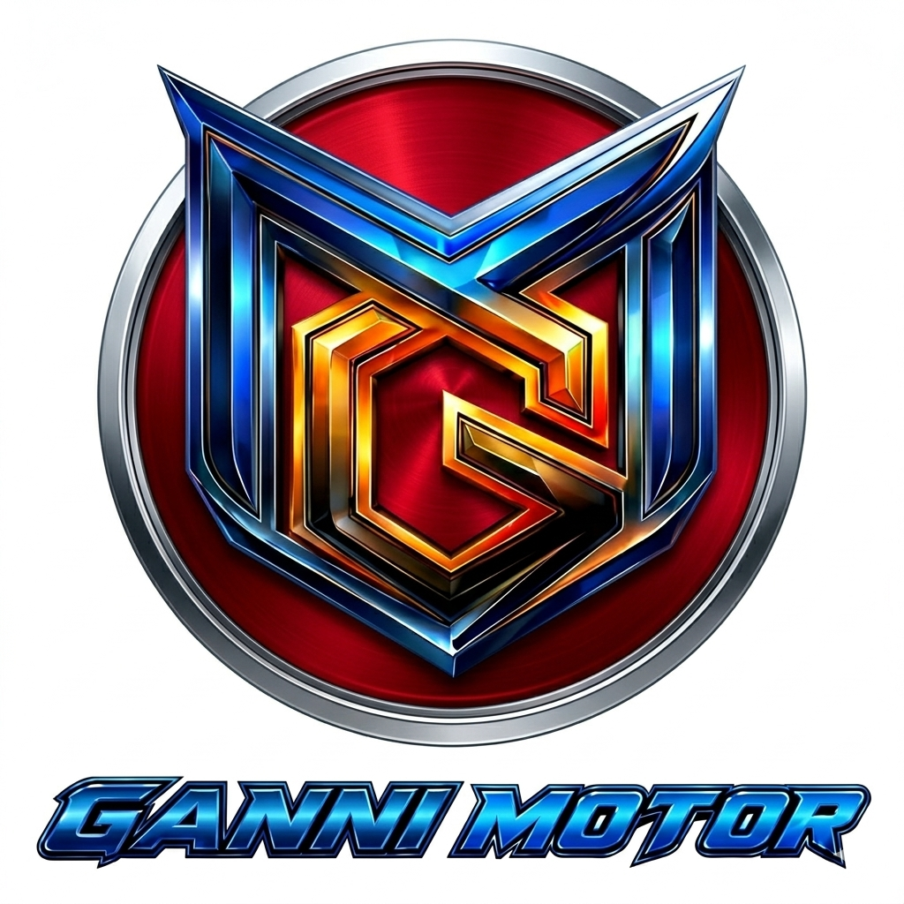

GANNI MOTOR
REPAIR YOUR MOTORBIKE ANYWHERE
Ganni Motor adalah solusi bengkel motor panggilan Jakarta Timur. Kami hadir langsung ke rumah, kantor, atau saat Anda mengalami kendala di jalan.
*Harga dapat berubah sesuai jenis motor dan tingkat kerusakan.
Kami melayani servis motor panggilan di Cakung, Pulogebang, Duren Sawit, Klender, Penggilingan, Jatinegara, Bekasi Utara dan sekitarnya. Siap membantu motor mogok di jalan maupun servis rutin di rumah (Home Service).
Ganni Motor melayani servis motor panggilan di Cakung, Pulogebang, Penggilingan, Duren Sawit, Klender, Jatinegara dan seluruh Jakarta Timur.
Layanan meliputi servis Honda Beat, Vario, Scoopy, PCX, NMAX, Aerox, Mio dan motor injeksi lainnya.
Jangan dorong motor Anda! Klik tombol di bawah:
HUBUNGI SEKARANGKlik tombol di bawah untuk melihat lokasi kami di Google Maps:
📍 Lokasi Bengkel Motor Panggilan Jakarta Timur